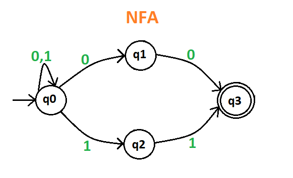
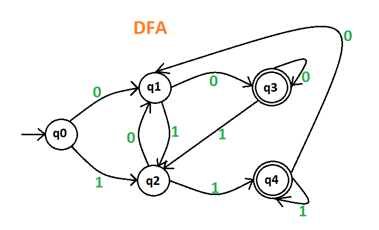
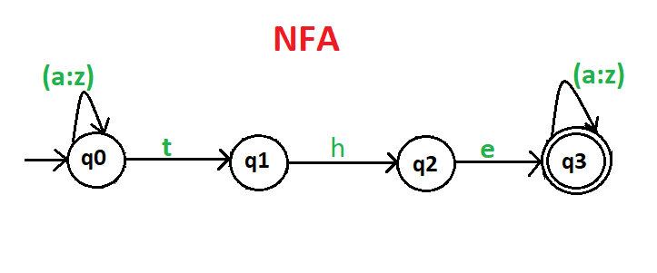
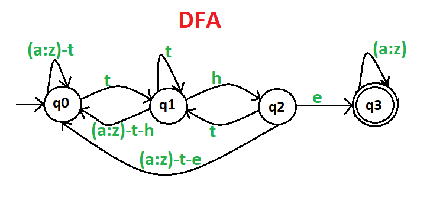
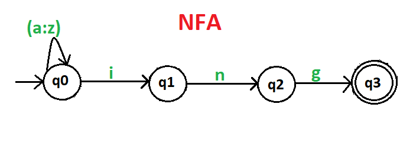
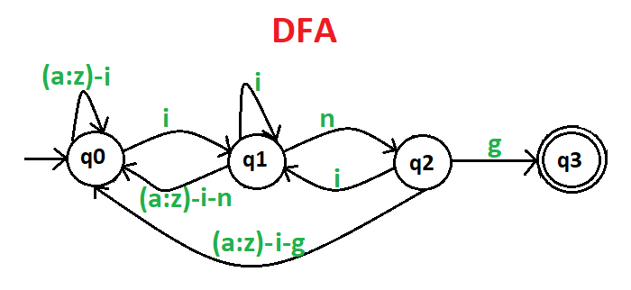

Que-1: Draw a deterministic and non-deterministic finite automate which accept 00 and 11 at the end of a string containing 0, 1 in it, e.g., 01010100 but not 000111010.
Explanation – Design a DFA and NFA of a same string if input value reaches the final state then it is acceptable otherwise it is not acceptable.
NFA of the given string is as follows:

DFA of the given string is as follows:

Here, q0 shows the initial state, q1 and q2 are the transition states, and q3 and q4 are the final states.
Note – NFA and DFA both have same power that means if NFA can recognized an language L then DFA can also be defined to do so and if DFA can recognized an language L then NFA can also be defined to do so.
Que-2: Draw a deterministic and non-deterministic finite automata which accept a string containing “the” anywhere in a string of {a-z}, e.g., “there” but not “those”.
Explanation – Design a DFA and NFA of a same string if input value reaches the final state then it is acceptable otherwise it is not acceptable. It is applicable for all the DFA and NFA. Since, NFA is quit easier then DFA, so first make its NFA and then go through the DFA.
NFA of the given string is as follows:

DFA of the given string is as follows:

Here, q0 shows the initial state, q1 and q2 are the transition states, and q3 is the final state.
Que-3: Draw a deterministic and non-deterministic finite automata which accept a string containing “ing” at the end of a string in a string of {a-z}, e.g., “anything” but not “anywhere”.
Explanation – Design a DFA and NFA of a same string if input value reaches the final state then it is acceptable otherwise it is not acceptable. It is applicable for all the DFA and NFA.
NFA of the given string is as follows:

DFA of the given string is as follows:

Here, q0 shows the initial state, q1 and q2 are the transition states, and q3 is the final state.